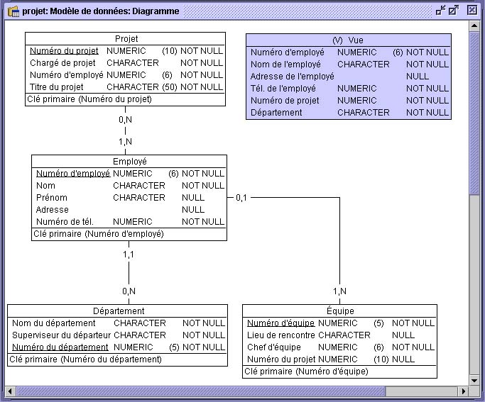

Ajouter des vues

Dans les bases de données relationnelles, une vue est une table logique
créée par la spécification d'opérations relationnelles qui relie plusieurs
fichiers.
Quand vous créez une vue, Open ModelSphere lui donne automatiquement le
nom par défaut Vue. Nous vous recommandons de nommer vos vues aussitôt que
vous les avez créées. Ainsi, vous éviterez toute confusion lorsque le schéma se complexifiera.
Pour ce faire, utilisez la fonction d’édition graphique du contenu de la vue,
soit par le biais de la fenêtre de propriétés ou par le panneau de conception.
Pour ajouter une vue:
- Choisir l'outil de création de Vue que vous trouverez dans la barre d’outils
Création relationnelle et cliquez dans la fenêtre du diagramme.
- Double-cliquez le nom de la vue, changez-le et appuyez sur Retour.
- Créez et nommez les vues tel que démontré dans le diagramme suivant.

Il est possible d'utiliser les vues de la même façon qu’on utilise les tables. Vous pouvez
donc :
- créer une association entre une vue et une autre vue ou table
- ajouter des clés primaires
- ajouter des clés uniques
- générer ou supprimer des clés étrangères
- ajouter des contraintes check
- ajouter des déclencheurs
- ajouter un index
Dans le but d’offrir un niveau d’abstraction supplémentaire, le support
des tables et des vues a été standardisé.